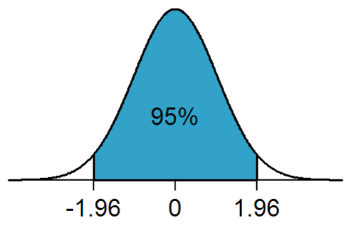
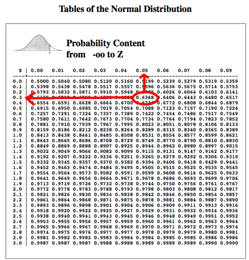
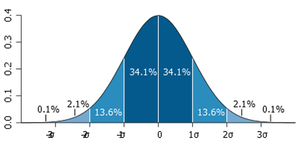
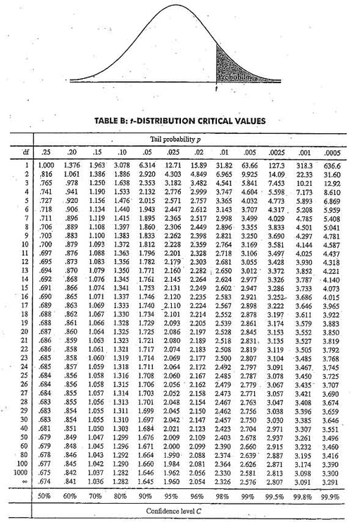

These are my notes on the Statistical Inference course (2th part) : Hypothesis Testing and t-tests
CLT : Central Limit Theorem
The Central Limit Theorem states that the distribution of sample statistics (e.g. mean) is approximatively normal, regardless of the underlying distribution, with mean = \(\mu\) and variance = \(\sigma^2\)
\(\bar{X} \sim N(mean = \mu, sd = \frac{\sigma}{\sqrt{n}})\)
Conditions for CLT:
- Independence : The sampled observations must be independent
- random sample / assignment
- if sampling without replacement, n < 10 % of population
- Sample Size / skew :
- population should be normal
- if not sample size should be large (rule of thumb > 30)
Confidence Interval
A confidence interval gives an estimated range of values which is likely to include an unknown population parameter, the estimated range being calculated from a given set of sample data (the interval is a random observed variable depending on the sample).
The level \(\alpha\) of a confidence interval gives the probability that the interval produced by the method employed includes the true value of this parameter. The level of confidence is the percentage of chance the unknown parameter is contained in the interval (which would differ for each sample across repeated sampling). The confidence interval represents values for the population parameter for which the difference between this parameter and the observed estimate is not statistically significant at the \(\alpha\) level.
Let X be a random sample from a probability distribution \(\theta\), a quantity to be estimated. A confidence interval I for \(\theta\) with confidence level \(\alpha\) has the property:
\(P(\theta \in I(x)) \geq 1 - \alpha\) with P a density probability depending on theta.
Let's take the example of the estimation of the mean of a population normally distributed which is the simpleast usage of condidence interval.
The confidence interval of a sample mean \(\bar X\) from a normally distributed sample is also normally distributed (from CLT), with the same expectation \(\mu\) and a standard deviation :
\(\frac {\sigma}{\sqrt{n}}\) (the standard deviation of a dsitribution of sample means is called standard error, SE)
By standardizing \(\bar X\), we get a random variable:
\(Z = \frac {\bar X-\mu}{\sigma/\sqrt{n}}\)
Z depend on the parameter \(\mu\) to be estimated and a standard normal distribution independent of the parameter \(\mu\). We look for numbers -z and z, independent of \(\mu\) between which Z lies with a probability \(1 - \alpha\).
For a 95% of confidence, we take \(1 - \alpha\) = 0.95, so
\(\!P(-z\le Z\le z) = 1-\alpha = 0.95\)
Z follows the cumulative normal distribution (Z is standardized)
\(\Phi(z) = P(Z \le z) = 1 - \tfrac{\alpha}{2} = 0.975\)
\(\Phi(z) = \Phi^{-1}(\Phi(z)) = \Phi^{-1}(0.975) = 1.96\)
 1.96 correspond to the 95% + 2.5% = 97.5% quantile of the normal distribution, according to the Z table (find 0.975 in the table and add the column header with the row header).  
and
\(0.95 = 1-\alpha=P(-z \le Z \le z)=P \left(-1.96 \le \frac {\bar X-\mu}{\sigma/\sqrt{n}} \le 1.96 \right)\)
\(0.95 = P \left( \bar X - 1.96 \frac{\sigma}{\sqrt{n}} \le \mu \le \bar X + 1.96 \frac{\sigma}{\sqrt{n}}\right)\)
The lower endpoint of the the interval is \(\bar X - 1.96 \frac{\sigma}{\sqrt{n}}\)
The upper endpoint of the the interval is \(\bar X + 1.96 \frac{\sigma}{\sqrt{n}}\)
We've computed our interval that can be interpreted this way : If we take 100 samples of size n and for each sample we compute the interval, then the parameter will be in 95 of the intervals computed, and outside of 5 intervals. We are 95% confident ot the result.
Example:
You have taken a random sample of 100 primary school children. Their heights had mean = 150cm and sd = 10 cm. We estimate the true average height of primary school children based on this sample using a 95% confidence interval.
\(\bar{x} = z \times SE = x\bar \pm 1.96 \times \frac{s}{\sqrt{n}} = 150 \pm 1.96 \times \frac{10}{\sqrt{100}} = 150 \pm \times 1.96 \times 1 = (148.04, 151.96)\)
We are 95% confident that primary school children mean height is between 148.04cm and 151.96cm.
As the standard deviation of the population \(\sigma\) is known in this case, the distribution of the sample mean \(\bar X\) is a normal distribution with \(\mu\) the only unknown parameter. In most of practical case, the parameter \(\sigma\) is also unknown, which calls for using the (Student's) t-distribution.
Required sample size for margin of error
Given a target margin of error and confidence level, and the standard deviation of a sample (or population), we can work backwards to determine the required sample size.
Example :
From previous measurements of primary school heights. What should be the sample size in order to get a 95% confidence interval with a margin of error less or equal to 1 cm:
\(ME = z \times SE\)
\(1 = 1.96 \times \frac{10}{\sqrt{n}}\)
\(n = \left(\frac{1.96 \times 10}{1}\right)^2 = 19.6^2 = 384.16\)
Thus we need a sample size of at least 385 primary school children.
Hypothesis testing
When interpreting an experimental finding, a natural question arises as to whether the finding could have occurred by chance. Hypothesis testing is a statistical procedure for testing whether chance is a plausible explanation of an experimental finding.
The researcher has a proposed hypothesis about a population characteristic and conducts a study to discover if it is reasonable, or, acceptable.
Null Hypothesis \(H_0\) : The status quo that is assumed to be true.
Alternative hypothesis \(H_a\) : An alternative claim under consideration that will require statistical evidence to accept, and thus, reject the null hypothesis. The alternative hypothesis claims that the population characteristic is different than the observed parameter. This difference is either that the characteristic has increased, decreased, or, possibly either increased or decreased.
The alternative hypotheses are typically of the form < (decrease), > (increase) or \(\neq\) (either increase or decrease). We have four possible outcomes:
| Truth | Decide | Result |
|---|---|---|
| H0 | H0 | Correctly accept null |
| H0 | Ha | Type I error (False Positive, falsely claims a significant result) |
| Ha | Ha | Correctly reject null |
| Ha | H0 | Type II error (False Negative falsely claims a nonsignificant result) |
A test statistic is used to make an assumption, the null is made upon this assumption. The test statistic will have a certain likelihood for occurring, according to the distribution being used. When this likelihood is small, this indicates that the sample data are either from an unusual sample, or, that the distribution of the population actually is different than assumed. If the sample is properly drawn, there is small risk that the sample is unusual, and, so, it is safe to draw a conclusion that the distribution may be changed. This allows the conclusion that the null hypothesis may have changed, and that the alternative hypothesis might be accepted instead. This conclusion leads the researcher to "reject" the null hypothesis.
Example:
From previous example, does the data support the hypothesis that primary school children on average are shorter than 151cm?
\(H_0 : \mu_0 = 151\)
\(H_a : \mu_0 < 151\)
Assuming \(H_0\), how unusual or extreme is the sample value we get from our OBSERVED data? or Assuming \(H_0\), what is the probability to obtain the observed data (ie. a mean of 150cm < 151 cm, with a sd=10cm) or a more extreme values?
An equivalent question is, assuming \(H_0\), ie. assuming X' normally distributed with \(X' \sim N(150, 1)\), what is the probability to obtain a standard deviation at least that far from the mean?
We must determine how our hypothesis mean is far from our OBSERVED sample mean (the z-score):
\(Z = \frac{\bar{X} - \mu}{\bar{\sigma_X}} = \frac{150 - 151}{1} = -1\)
Our observed data are -1 standard deviation from the hypothesis mean.
A reasonable strategy would be : do not reject the null hypothesis, ie. "primary school children have mean height of 151 cm", if there is more than x% chance of getting a random sample of 100 children with a sample mean 150, with x enough hight (more than 5% usually).
The probability under the null hypothesis of obtaining evidence as or more extreme than your z-score or test statistic (obtained from your observed data) in the direction of the alternative hypothesis is the p-value.
P-value
Probability of obtaining the observed result or results that are more "extreme", given that hypothesis is true, ie. P(observed or more extreme outcome | \(H_0\)).
A reasonable strategy would reject the null hypothesis if the sample mean \(\bar X\) is larger or lower than some constant C, chosen so that the probability of a Type I error is \(\alpha\)
Note: \(C = \mu + qnorm(\alpha) \times sd\) instead of computing a constant C as a cutpoint for accepting or rejecting \(H_0\), we simply compute a Z-score based on alpha, the number of standard deviations the sample mean is from the hypothesized mean.
If the p-value is low (ie. lower than the significant level (\(\alpha\)), usually 5% as a standard level of rejection), then we saw that is very unlikely to observe the data if the null hypothesis is true and reject it.
If the p-value is high (ie. higher than (\(\alpha\)), we say that it is likely to observe the data even if the null hypothesis was true, and thus do not reject it.
Interpreting the p-value
When a probability value is below the \(\alpha\) level, the effect is statistically significant and the null hypothesis is rejected.
However, not all statistically significant effects should be treated the same way. For example, you should have less confidence that the null hypothesis is false if p = 0.049 than p = 0.003.
If the null hypothesis is rejected, then the alternative to the null hypothesis (called the alternative hypothesis) is accepted.
In many situations it is very unlikely two conditions will have the same population means. Therefore, even before an experiment comparing their effectiveness is conducted, the researcher knows that the null hypothesis of exactly no difference is false. If a test of the difference is significant, then the direction of the difference is established.
When a significance test results in a high probability value, it means that the data provide little or no evidence that the null hypothesis is false. However, the high probability value is not evidence that the null hypothesis is true. The problem is that it is impossible to distinguish a null effect from a very small effect.
Example:
From the previous example, with a significant level equal to 0.05:
\(\bar{X} \sim N(\mu = 151, SE = 1)\) #Null hypothesis
Test statistic or Z-score:
\(Z = \frac{\bar X - \mu}{SE} = \frac{150 - 151}{1} = -1\)
The probability that we are at most -1 standard deviation from the mean:
\(P\left(Z < -1\right) = 1 - 0.8413 = 0.1587\)
This probability can be computed with the qnorm R function:
pnorm(-1)
## [1] 0.1586553
If we assume \(H_0\) (\(mu = 151\)), the probability of getting a sample this "extreme" (\(\mu = 150\)) or actually more extreme is 15.9%. Since p-value is higher than 5%, we don't to reject \(H_0\).
Interpretation :
- If in fact, primary school children have mean height of 151 cm, there is a 15,9% chance that a random sample of 100 children would yield a sample mean of 150cm or lower.
- This is a pretty hight probability
- Thus the sample mean of 150 could have likely occured by chance.
Two-sided Hypothesis testing
The test above was a one-side or one-tailed test. What is the probability that the children have mean height different from 151cm?
\(H_0 : \mu = 151\)
\(H_a : \mu \neq 151\)
We could reject \(H_0\) (and accept \(H_a\)) when our sample mean is significant different that 151, that is either less than OR greater that 151. We consider values at both tails at the .025 and the .975 percentiles. This means that the test statistic is less than .025, Z_(alpha/2), or greater than .975, Z_(1-alpha/2). Notice that if we reject H_0, either it was FALSE (and hence our model is wrong and we are correct to reject it) OR H_0 is TRUE and we have made an error (Type I). The probability of this is 5%.
P-value:
\(P\left(Z < -1\right) + P\left(Z > 1\right) = 2 \times (1-0.8413) = 0.3174\)
With R:
2 * pnorm(-1)
## [1] 0.3173105
Decision rule
The decision rule is to reject the null hypothesis H0 if the observed value is in the critical region, and to accept or "fail to reject" the hypothesis otherwise.
Left Tailed Test:
\(H_0 : \mu = \mu_0\) parameter = value
\(H_a : \mu < \mu_0\) parameter < value
with alpha = 0.5
Reject \(H_0\), if the test statistics is in the region of rejection, ie. if it is smaller than Z_5.
Z_95 <- qnorm(0.95)
Z_95
## [1] 1.644854
the 95% percentile corresponds to the value 1.64 (see also zthe z table above).
Right Tailed Test:
\(H_0 : \mu = \mu_0\) parameter = value
\(H_a : \mu > \mu_0\) parameter > value
Reject \(H_0\), if the test statistics is in the region of rejection, ie. if it is larger than Z_95.
Z_5 <- qnorm(0.05)
Z_5
## [1] -1.644854
Two Tailed Test:
\(H_0 : \mu = \mu_0\) parameter = value
\(H_a : \mu \neq \mu_0\) parameter \(\neq\) value (Another way to write not equal is < or >)
Reject \(H_0\), if the test statistics is in the region of rejection, ie. if it is larger than Z_95 or smaller than Z_5.
The decision rule can be summarized as follows:
Reject \(H_0\) if the test statistic falls in the critical region (reject \(H_0\) if the test statistic is more extreme than the critical value or reject \(H_0\) ), otherwise, we fail to reject \(H_0\).
The p-value tells us if the test statistic is inside our outside the region.
Reject \(H_0\) if p-value is less that the specified \(\alpha\), otherwise, we fail to reject \(H_0\).
Note : I you fail to reject the one sided test, you know that you will fail to reject the two sided.
Hypothesis tests and Confidence Intervals
They're equivalent.
If you set \(\alpha\) to some value and ran many tests checking alternative hypotheses against \(H_0\) that \(\mu=\mu_0\), the set of all possible values for which you fail to reject \(H_0\) forms the \((1\alpha)%\) (that is 95%) confidence interval for \(\mu_0\).
Similarly, if a \((1\alpha)%\) interval contains mu_0, then we fail to reject \(H_0\).
So, to resume: If the confidence interval contains the null value (\(\mu_0\), the value of \(H_0\)), don't reject \(H_0\). If the confidence interval does not contain the null value, reject \(H_0\), cause this tells us that either our hypothesis is wrong or we're making a mistake (Type 1) in rejecting it.
Previously, we found the 95% interval for heights of primary school children to be (148, 152). Given that our null hypothesis (\(H_0 = 151\)) falls within this 95% Cl, we do not reject it.
<- 95% confident that the av is somewherer in here -> ---------|-----------------------------------------------------|--------- 148cm 152
A two-sided hypothesis with significance level \(\alpha\) is equivalent to a confidence interval with \(CL = 1 - \alpha\). A one-sided hypothesis with significance level \(\alpha\) is equivalent to a confidence interval with \(CL = 1 - 2\alpha\).
Type II error
Let the probability of a type II error (accepting H_0 when it is false) to be beta. The term POWER refers to the quantity 1-beta and it represents the probability of rejecting \(H_0\) when it's false. This is used to determine appropriate sample sizes in experiments.
The t distribution
So far, we use normal distribution and implicitly relying on the Central Limit Theorem. According to CLT, the distribution of sample statistics is approximatively normal, if:
- Population is normal
- Sample size is large (n> 30) If so, we can use the population sd (\(s\sigma\)) to compute a z-score.
However, when we deal with small sample size and do not know the standard deviation of the population (\(\sigma\)), we rely on the t distribution.
The t distribution takes into account that spread of possible \(\sigma\)'s.
The test statistic is the same as before \(\frac{Observed-Expected}{SE}\) ie. \(\frac{Observed-Expected}{s/\sqrt{n}}\) and the test statistic is compared to \(t_{1-\alpha, df}\) or/and \(t_{\alpha, df}\) (with df the degree of freedom = size - 1).
Shape of the distribution:
- Observations are more likely to fall beyond 2 sd from the mean
- The thicker tails are helpful in adjusting for the less reliable data on the standard deviation. The t distribution has one parameter, degrees of freedom (df) which determines the thickness of the tail
Under \(H_0\), the probability that the test statistic is larger than the 95th percentile of the t distribution is 5%. The associated quantile is:
n <- 16 # sample size
pt(q = 2.5, df = 15, lower.tail = FALSE)
## [1] 0.0122529
the P(X > 2.5) if \(H_0\) were true. We would see this large a test statistic with probability 1% which is rather a small probability.
- df refers to the number of independent observations in data set
- nb of independent observations = sample size - 1
When df increases, the t distribution approaches the normal distribution.
Normal distribution vs t distribution: if you're unsure which one to use, use the t distribution since it approximates to the normal distribution with large sample sizes.
T table 
Independent and dependent t-tests
Dependent t-test: when evaluating the effect between two related samples, ie. when the same subjects are being compared or when two samples are matched at the level of individual subjects.
Example : You feed a group of 100 people fast food everyday, did they gain weight?
You can calculate a difference score and then determine if the mean difference score is significantly different from zero and so if there is significantly change.
Independent t-test: when evaluating the effect between two independent sample: You feed 50 males and 50 males fast food everyday. Did males or females gain more weight after 30 days?
Test Comparisons
| - | Observed | Expected | SE |
|---|---|---|---|
| z | Sample mean | Pop. mean | SE of the mean |
| t (single sample) | Sample mean | Pop. mean | SE of the mean |
| t(dependent) | Sample mean of difference scores |
Pop. mean of difference scores |
SE of the mean difference |
| t(independent) | Difference between two sample means |
Difference between two pop. mean |
SE of the difference between means |
Degrees of freedom:
| - | df |
|---|---|
| z | NA |
| t (single sample) | N-1 |
| t(dependent) | N-1 |
| t(independent) | (N1-1) + (N2-1) |
Using the R t.test function
Mean of difference
From the father.son library, which contains 1078 measurements of a father's height and his son's height, we test the mean of the difference of the vectors sheight (son height) and fheight (father height), the null hypothesis is the true mean of the difference is 0.
library("UsingR")
data(father.son)
t.test(father.son$sheight - father.son$fheight)
##
## One Sample t-test
##
## data: father.son$sheight - father.son$fheight
## t = 11.789, df = 1077, p-value < 2.2e-16
## alternative hypothesis: true mean is not equal to 0
## 95 percent confidence interval:
## 0.8310296 1.1629160
## sample estimates:
## mean of x
## 0.9969728
As said before, t = \(\frac{X'-\mu}{SE}\) ie. \(\frac{X'- \mu}{s/\sqrt{n}}\)
\(\mu = 0\) as we test difference of means.
We can check that t = 11.789 as returned by the t.test function,
v <- father.son$sheight - father.son$fheight
t <- mean(v) / (sd(v)/sqrt(length(v)))
t
[1] 11.78855
confidence intervals:
<- mean(v) + c(-1, 1) * (sd(v)/sqrt(length(v)))
Difference in means
We test the difference in means of the vectors sheight and fheight, the null hypothesis is the true difference in means is 0.
t.test(father.son$sheight, father.son$fheight, paired = TRUE)
##
## Paired t-test
##
## data: father.son$sheight and father.son$fheight
## t = 11.789, df = 1077, p-value < 2.2e-16
## alternative hypothesis: true difference in means is not equal to 0
## 95 percent confidence interval:
## 0.8310296 1.1629160
## sample estimates:
## mean of the differences
## 0.9969728
The test statistic is 11.789 which is quite hight so we reject the null hypothesis that the true mean of the difference is 0, (if you ran the test on the difference sheight-fheight) or that the true difference in means was 0 (if you ran the test on the two separate but paired columns).
Note the 95% confidence interval, 0.8310296 1.1629160, returned by t.test. It does not contain the hypothesized population mean 0 so we're pretty confident we can safely reject the hypothesis. This tells us that either our hypothesis is wrong or we're making a mistake (Type 1) in rejecting it.